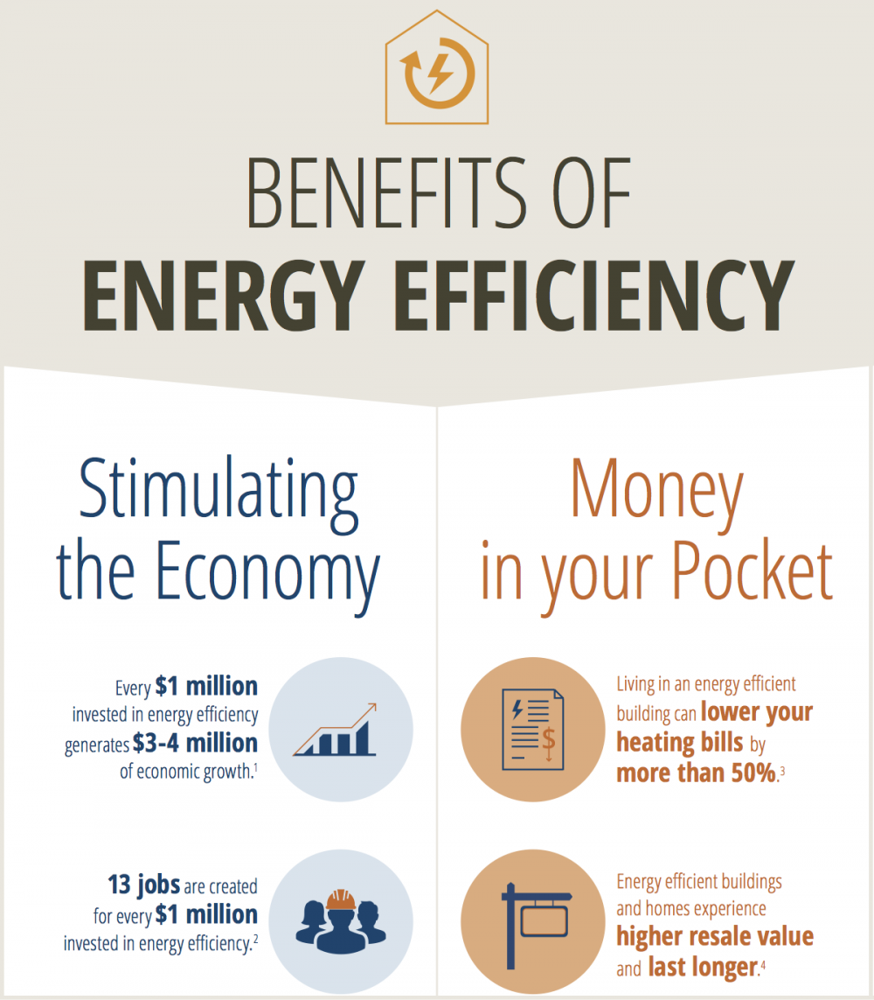
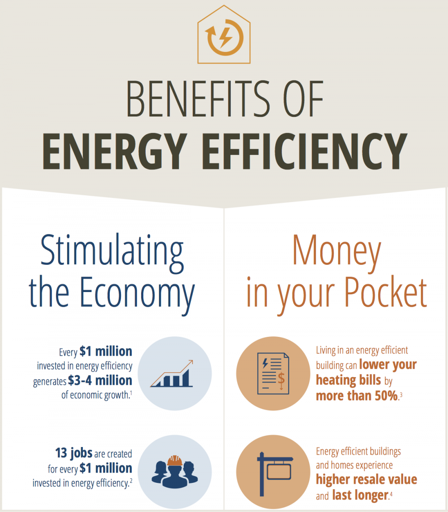
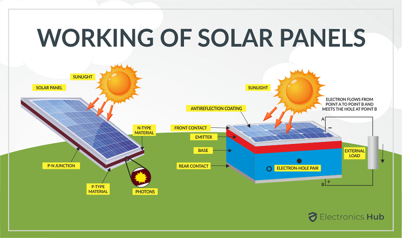
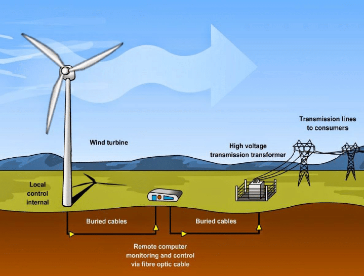

Solutions for Global Warming
"Every individual has a role to play in making the world a better place for future generations.
The concrete benefits of taking action on the issue of global
warming are undeniable"
Addressing global warming requires a multi-faceted approach involving government policies and collaboration with various organizations. Here are some solutions that can be implemented with the involvement of governments and different organizations: The effects of climate change are already threatening our health, our communities, our economy, our security, and our children’s future. What can you do? A whole lot, as it turns out. Americans, on average, produce 21 tons of carbon a year, about four times the global average. Personal action is, of course, no substitute for meaningful government policies. We still must limit carbon pollution and aggressively move away from dirty fossil fuels toward cleaner power. But it’s important to remember the equally vital contributions that can be made by private citizens - which is to say, by you. “Change only happens when individuals take action,” says clean energy advocate Aliya Haq. “There’s no other way, if it doesn’t start with people.”

Ending our Reliance on Fossil Fuels
The single-most important thing that we can do to combat climate change is to drastically reduce our consumption of fossil fuels. The burning of coal, oil, and natural gas in our buildings, industrial processes, and transportation is responsible for the vast majority of emissions that are warming the planet—more than 75 percent . In addition to altering the climate, dirty energy also comes with unacceptable ecological and human health impacts. We must replace coal, oil, and gas with renewable and efficient energy sources. Thankfully, with each passing year, clean energy is making gains as technology improves and production costs go down. But in order to meet the goal of reducing global carbon emissions by at least 45 percent below 2010 levels before 2030— which scientists tell us we must do if we’re to avoid the worst, deadliest impacts of climate change—we must act faster. There are promising signs. Wind and solar continue to account for ever-larger shares of electricity generation. In 2021, wind and solar generated a record 10 percent of electricity worldwide. And modeling by NRDC has found that wind, solar, hydro, and nuclear could account for as much as 80 percent of U.S. electricity by the end of this decade. (We can also fully realize our clean energy potential if we invest in repairing our aging grid infrastructure and installing new transmission lines.) While this transformation is taking place, automakers—as well as governments—are preparing for a future when the majority of vehicles on the road will produce zero emissions
Greater Energy Efficiency
Energy efficiency has been referred to as “the first fuel”; after all, the more energy efficient our systems are, the less actual fuel we have to consume, whether rooftop solar energy or gas power. Considered this way, efficiency is our largest energy resource. As the technology harnessing it has advanced over the past 40 years, efficiency has contributed more to the United States’s energy needs than oil, coal, gas, or nuclear power. What’s more, energy efficiency strategies can be applied across multiple sectors: in our power plants, electrical grids, factories, vehicles, buildings, home appliances, and more. Some of these climate-friendly strategies can be enormously complex, such as helping utility companies adopt performance-based regulation systems, in which they no longer make more money simply by selling more energy but rather by improving the services they provide.For example, weatherproofing buildings, installing cool roofs, replacing boilers and air conditioners with super-efficient heat pumps, and yes, switching out light bulbs from incandescent to LED can all make a big dent in our energy consumption
 

Renewable Energy
a. Solar Energy: Solar energy is one of renewable energy and is produced when light
from the sun is absorbed by photovoltaic cells and turned directly into electricity. The solar panels that you may
have seen on rooftops or at ground level are made up of many of these cells working together. By 2030, at least
one in seven U.S. homes is projected to have rooftop
solar panels, which emit no greenhouse gases or other pollutants. By 2035, it could account for
as much as 40 percent of electricity generation. From 2020 through
2026, solar will account for
more than half of new electricity generation worldwide. You might ask, what to do when the sun doesn’t shine. Alongside the boom in
solar has been a surge in companion battery storage: More than 93 percent of U.S.
battery capacity added in 2021 was paired with solar power plants. Battery
storage is key to the clean energy revolution—and adapting to a warming world,
battery storage can help manage the energy demand and control the threat of
power failures.

b. Wind Energy: Wind turbines produce electricity more conventionally, wind turns the blades of a turbine, which spin a generator. Currently, wind accounts for just
above 9 percent of U.S. electricity generation, but it like solar, is growing fast as more states and utilities come to recognize its ability to produce 100
percent clean energy at a remarkably low cost. Unsurprisingly, states with plenty of wide-open space—including Kansas, Oklahoma, and Texas—have huge capacity when
it comes to wind power, but many analysts believe that some of the greatest potential for wind energy exists just off our coasts.
Offshore wind even tends to ramp
up in the evenings when home electricity use jumps, and it can produce energy during the rainy and cloudy times when solar energy is less available.
Smart planning and protective measures, meanwhile, can ensure we harness the massive promise of offshore wind while limiting or eliminating potential impacts on
wildlife.

c. Geothermal and Hydroelectric Energy: Water under certain conditions—can also be a source of renewable energy. For instance,
geothermal energy works by drilling
deep underground and pumping extremely hot water up to the earth’s surface, where it is then converted to steam that, once pressurized, spins a generator to
create electricity. Hydroelectric energy uses gravity to “pull”
water downward through a pipe at high speeds and pressures; the force of this moving water is
used to spin a generator’s rotor.Humans have been harnessing heat energy from below the earth’s surface for eons—just think of the hot springs that provided
warmth for the people of ancient Rome. Today’s geothermal plants are considered clean and renewable so long as the water and steam
they bring up to the surface
is redeposited underground after use. Hydroelectric plants, when small-scale and carefully managed, represent a safe and renewable source of energy. Larger
plants known as mega-dams, however, are
highly problematic. Their massive footprint can disrupt the rivers on which
people and wildlife depend.

Government Policies
Government policies play a vital role in combating global warming. They can provide the framework for change by regulating emissions, incentivizing renewable energy adoption, and promoting sustainable practices.
a. Carbon Pricing: Carbon pricing is an instrument that captures the external costs of greenhouse gas (GHG) emissions—the costs of emissions that the public pays for, such as damage to crops, health care costs from heat waves and droughts, and loss of property from flooding and sea level rise—and ties them to their sources through a price, usually in the form of a price on the carbon dioxide (CO2) emitted. A price on carbon helps shift the burden for the damage from GHG emissions back to those who are responsible for it and who can avoid it. Instead of dictating who should reduce emissions where and how, a carbon price provides an economic signal to emitters, and allows them to decide to either transform their activities and lower their emissions, or continue emitting and paying for their emissions. In this way, the overall environmental goal is achieved in the most flexible and least-cost way to society. Placing an adequate price on GHG emissions is of fundamental relevance to internalize the external cost of climate change in the broadest possible range of economic decision making.
b. Renewable Energy Mandates: Governments can set ambitious renewable energy targets, requiring a certain percentage of energy to come from sources like wind, solar, and hydroelectric power. These mandates encourage the development and adoption of clean and renewable energy technologies. India has set a target to reduce the carbon intensity of the nation’s economy by less than 45% by the end of the decade, achieve 50 percent cumulative electric power installed by 2030 from renewables, and achieve net-zero carbon emissions by 2070. India aims for 500 GW of renewable energy installed capacity by 2030.
India aims to produce five million tonnes of green hydrogen by 2030.
57 solar parks with aggregate capacity of 39.2 GW have approved in India. Wind Energy has a target of 30 GW by 2030, with potential sites identified.
Following list of activities in renewable energy will be considered for trading carbon credits under Article 6.2 mechanism as assigned under the National Designated Authority for the Implementation of the Paris Agreement (NDAIAPA)
c. R&D Funding: R&D Grant Funding is a government scheme designed to support the development of competitive new products, processes and services. A standard project using the scheme might typically run between 6 months and 3 years, with grants funding up to 70% of the costs involved. R&D always involves an element of risk, but a cash boost at a critical time can do a lot to make the work you're doing safer and more effective. Grant Funding avoids some of the major pitfalls of other financing options as well, like giving up equity in your business
International Cooperation
Global warming is a worldwide problem, and international cooperation is essential. Governments and organizations are coming together to address the problem of climate change through various means. Some of them are:
a. The Paris Agreement: The Paris Agreement is a legally binding international treaty on climate change. It was adopted by 196 Parties at the UN Climate Change Conference (COP21) in Paris, France, on 12 December 2015. It entered into force on 4 November 2016. Its overarching goal is to hold “the increase in the global average temperature to well below 2°C above pre-industrial levels” and pursue efforts “to limit the temperature increase to 1.5°C above pre-industrial levels". World leaders have stressed the need to limit global warming to 1.5°C by the end of this century that’s because the UN’s Intergovernmental Panel on Climate Change indicates that crossing the 1.5°C threshold risks unleashing far more severe climate change impacts. To limit global warming to 1.5°C, greenhouse gas emissions must peak before 2025 at the latest and decline 43% by 2030.


b. COP26: The UN Climate Change Conference in Glasgow (COP26) brought together 120 world leaders and over 40,000 registered participants. The outcome of COP26 – The Glasgow Climate Pact – is the fruit of intense negotiations among almost 200 countries over the two weeks, strenuous formal and informal work over many months, and constant engagement both in-person and virtually for nearly two years. “The approved texts are a compromise,” said UN Secretary-General António Guterres. “They reflect the interests, the conditions, the contradictions and the state of political will in the world today. They take important steps, but unfortunately the collective political will was not enough to overcome some deep contradictions". COP26 did produce new “building blocks” to advance implementation of the Paris Agreement through actions that can get the world on a more sustainable, low-carbon pathway forward.


c. SDGs: In September, 2015 the 2030 Agenda for Sustainable Development was adopted by 193 member states of the United Nations, this was a unanimous decision. The 2030 Agenda is the successor to the Millennium Development Goals (MDGs), and sets the global development agenda for the next 15 years. At the heart of the 2030 Agenda are the Sustainable Development Goals (SDGs). The SDGs are a universal set of goals, targets, and indicators that focus on development. The SDGs can be broadly grouped into five overarching elements: people, planet, prosperity, peace and partnership and are made up of 17 inter-related and mutually supporting goals, which in turn comprise of 169 targets. The signatories of the 2030 Agenda are expected to use these agreed upon SDGs to guide the development of policies, programmes and projects that support and influence the development trajectory of their countries, regions and the world.


In conclusion, addressing global warming requires a comprehensive approach that includes government policies, international cooperation, a shift to renewable energy, sustainable agriculture, and the efforts of non-governmental organizations. The urgency of the issue demands a concerted effort from all sectors of society to mitigate the impacts of climate change and ensure a sustainable future for generations to come.